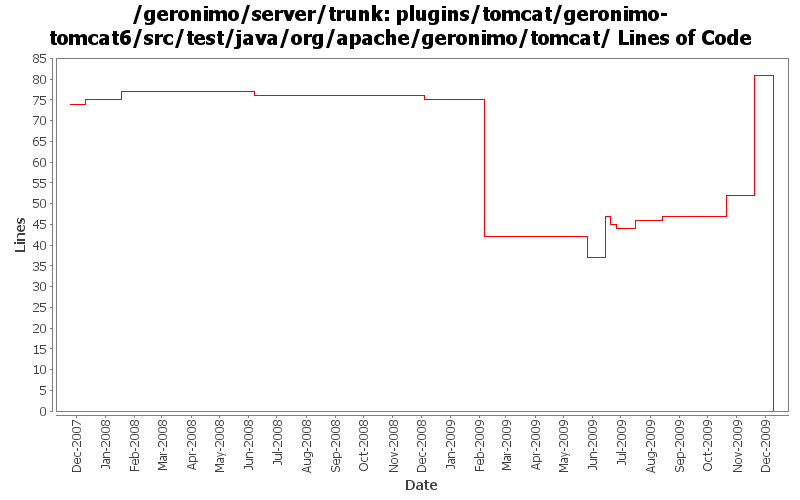

[root]/plugins/tomcat/geronimo-tomcat6/src/test/java/org/apache/geronimo/tomcat
 cluster
(0 files, 0 lines)
cluster
(0 files, 0 lines)

| Author | Changes | Lines of Code | Lines per Change |
|---|---|---|---|
| Totals | 51 (100.0%) | 155 (100.0%) | 3.0 |
| djencks | 30 (58.8%) | 101 (65.2%) | 3.3 |
| xuhaihong | 12 (23.5%) | 41 (26.5%) | 3.4 |
| rickmcguire | 1 (2.0%) | 7 (4.5%) | 7.0 |
| gawor | 2 (3.9%) | 4 (2.6%) | 2.0 |
| genspring | 1 (2.0%) | 1 (0.6%) | 1.0 |
| gdamour | 1 (2.0%) | 1 (0.6%) | 1.0 |
| kevan | 2 (3.9%) | 0 (0.0%) | 0.0 |
| jlaskowski | 2 (3.9%) | 0 (0.0%) | 0.0 |
GERONIMO-4980 Use Tomcat 7 in Geronimo 3.0
0 lines of code changed in 8 files:
GERONIMO-4953 No way to set Tomcat native cluster on engine and host level
38 lines of code changed in 1 file:
Commit tomcat plugin changes so far
7 lines of code changed in 1 file:
GERONIMO-4742 Connector portlets for Tomcat does not work
1, Added ConnectorWrapperGBeanStarter.java to start connector GBeans for connectors defined in server.xml.
2, Added TomcatServerConfigManager.java to use DOM to read/write connectors from server.xml.
3, Modified other classes to make this happen.
1 lines of code changed in 1 file:
GERONIMO-4659 Include web app "Display Name" in console web app portlet (Patch from Victor Fang)
1 lines of code changed in 1 file:
GERONIMO-4645 use jacc ejb ws auth for jetty6, simplify SOAPHandler interface
2 lines of code changed in 1 file:
GERONIMO-4752 rewrite toomcat security to support jaspic and better support jacc
7 lines of code changed in 3 files:
GERONIMO-4645 Make ejb ws security more jacc friendly, implement transport guarantees for jetty7 using jacc. See jira for more comments
2 lines of code changed in 1 file:
prefer openejb-jar.xml instead of geronimo-openejb.xml descriptor in ejb ws deployer and pass additional properties object to SoapHandlers
2 lines of code changed in 1 file:
GERONIMO-4715 Get tomcat to use our thread pools
2 lines of code changed in 1 file:
GERONIMO-4684 Recover the AccessLogValve and LogManager, those two GBeans are needed by console
1 lines of code changed in 1 file:
GERONIMO-4684 Do property substitution and calculations in the tomcat server.xml
1 lines of code changed in 1 file:
GERONIMO-4684 Provide a way for the existing EngineGBean to wrap the engine started from a server.xml. This should provide backward compatibility for added gbeans in user plans
12 lines of code changed in 1 file:
GERONIMO-4684 Configure tomcat server using server.xml
1 lines of code changed in 1 file:
GERONIMO-4684, GERONIMO-4685 Use our tomcat build, configure tomcat using server.xml. Also includes some spec jar updates including using our jaxb spec jar
11 lines of code changed in 2 files:
GERONIMO-4553 Make web use of security realms depend on plugin visibility; make console expose the 'global' attribute for configuration (renamed from 'publish'). Also merges in geronimo-security changes from sandbox branches.
21 lines of code changed in 4 files:
GERONIMO-4531, GERONIMO-4523 Simplify builder collections. Make security principal-role mappings independent of the application
36 lines of code changed in 5 files:
support for specifying a list of http methods that should be secured for ejb-based web services (GERONIMO-4015)
2 lines of code changed in 1 file:
GERONIMO-4445, GERONIMO-4415 Fix up GeronimoLoginConfiguration and SimpleCredentialStore, use in monitoring console agent
2 lines of code changed in 1 file:
header fixes (Rev, Date)
0 lines of code changed in 2 files:
GERONIMO-4124 clean up jacc usage
0 lines of code changed in 2 files:
GERONIMO-4109 reverse host-engine relationship direction for non-default hosts
1 lines of code changed in 1 file:
GERONIMO-1761 move geronimo-util to geronimo-crypto. Still pending mv of one test directory that svn wouldn't let me move
0 lines of code changed in 2 files:
GERONIMO-3758 put the default jacc provider implementation classes in a separate package
4 lines of code changed in 1 file:
Add support for the clustering of Tomcat Web-applications over WADI. The change
replicates the same projects and design than for the clustering of Jetty
Web-applications over WADI.
A couple of things specific to Tomcat: we insert a Valve in front of all the
Valves, even the Geronimo before after one, in order to hook-in the traversal
of the WADI Contextualiser stack prior to enter the web-application.
This fixes GERONIMO-3696 - Tomcat Clustering over WADI
1 lines of code changed in 1 file:
GERONIMO-3630 cleanup. Use copy-file to install base tomcat goo and cluster repo stuff
0 lines of code changed in 6 files: